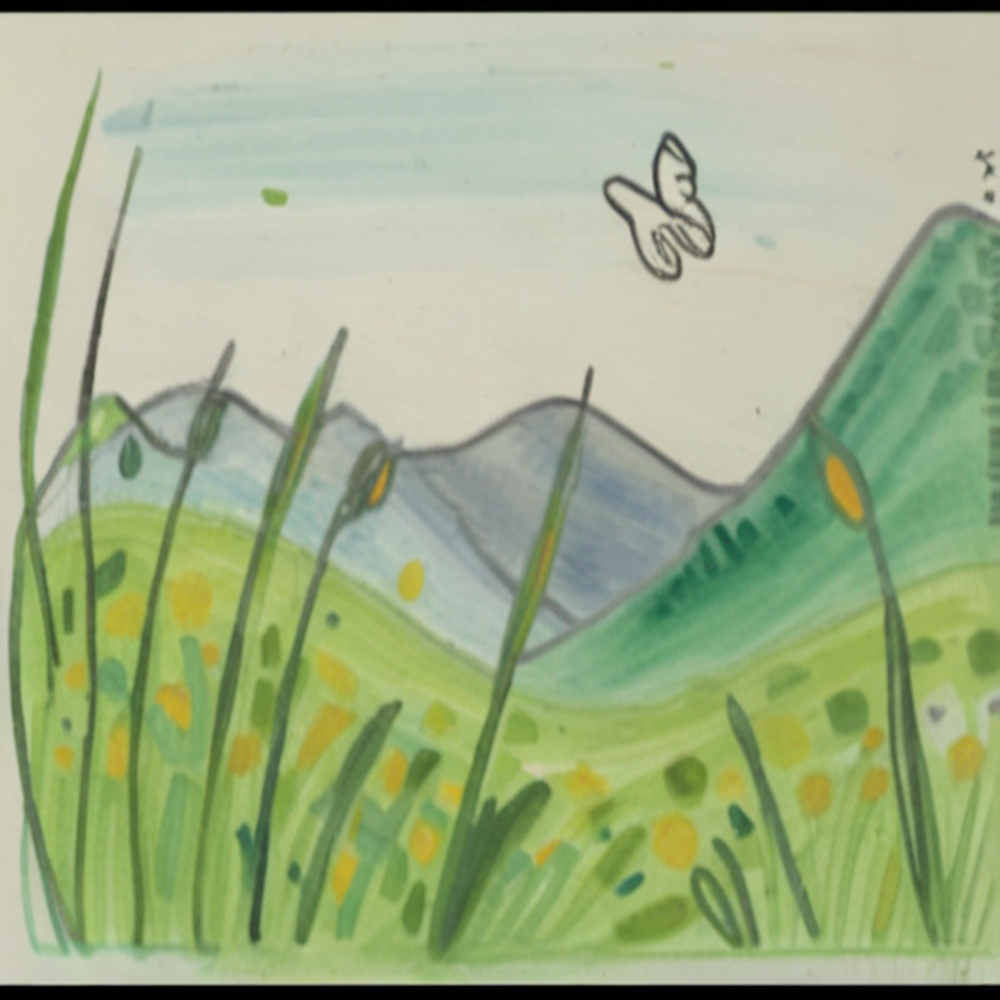

(ii) Comparison with Style Baselines
Reference
BLoRA
InstantStyle
DreamBooth
Ours





We propose FairyGen, a novel framework for generating animated story videos from a single hand-drawn character, while faithfully preserving its artistic style. It features story planning via MLLM, propagated stylization, 3D-based motion generation, and a two-stage propagated motion adapter.
A robot stands on the edge of a tall city rooftop, ready to jump down to the street below. The robotfirst extends its arms, then jumps upward. As the robot drops, the building walls and city skyline move past in the background. The robot lands freely on the pavement, with its arms touching the ground, as dust and debris scatter slightly upon landing.
MEVG (ECCV 24)
Vlogger (CVPR 24)
Ours
prompt: A robot is walking through a corridor in a futuristic spaceship.
Train Data
DreamVideo (CVPR 24)
Ours


In some case, our method create a dynamic foreground motion over a static background due to the video diffusion model's unpredictability.
BibTex Code Here